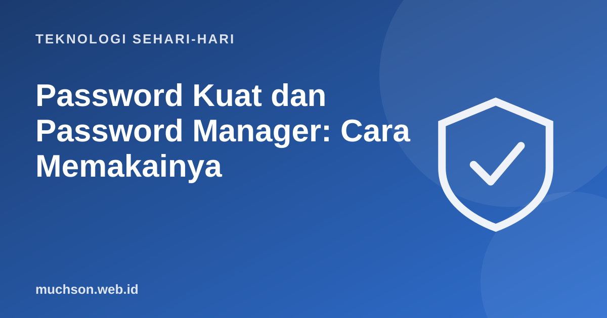

Beranda › Artikel › Teknologi Sehari-hari
Teknologi Sehari-hariPassword Kuat dan Password Manager: Cara Memakainya
Sebagian besar pembobolan akun bukan karena peretas jenius, melainkan karena kata sandi yang lemah atau dipakai ulang di banyak tempat. Kabar baiknya, memperbaikinya tidak sulit bila Anda tahu prinsipnya.

Yang menentukan kekuatan: panjang
Setiap karakter tambahan membuat jumlah kemungkinan melonjak. Frasa sandi panjang yang mudah diingat, misalnya empat sampai lima kata acak, sering lebih kuat dan lebih mudah diingat daripada kata pendek yang penuh simbol. Coba sendiri pada contoh di bawah, dan jangan mengetik kata sandi asli Anda.
| Panjang (huruf kecil saja) | Jumlah kemungkinan | Dengan 10 miliar tebakan per detik, menebak semua kira-kira |
|---|---|---|
| 6 huruf | sekitar 309 juta | kurang dari 1 detik |
| 8 huruf | sekitar 209 miliar | sekitar 21 detik |
| 10 huruf | sekitar 141 triliun | sekitar 4 jam |
| 12 huruf | sekitar 95 kuadriliun | sekitar 110 hari |
| 16 huruf | sekitar 43 sekstiliun | sekitar 138.000 tahun |
Setiap huruf tambahan melipatgandakan jumlah kemungkinan sekitar 26 kali (untuk huruf kecil saja). Penyerang tidak selalu menebak semua kemungkinan: kata umum dan pola yang mudah ditebak dicoba lebih dulu, jadi kata sandi acak atau frasa panjang jauh lebih baik daripada kata yang lazim.
Aturan yang benar-benar penting
Password manager: solusinya
Mustahil mengingat puluhan sandi unik yang panjang. Password manager menyimpannya dalam brankas terenkripsi yang dibuka dengan satu kata sandi utama. Ia juga bisa membuat sandi acak yang kuat dan mengisinya otomatis, sekaligus membantu mengenali situs palsu karena tidak akan mengisi di alamat yang berbeda.
Email adalah kunci utama: lewat fitur "lupa sandi", siapa pun yang menguasai email Anda bisa mengambil alih akun lain. Lindungi email Anda dengan sandi unik yang kuat dan verifikasi dua langkah.